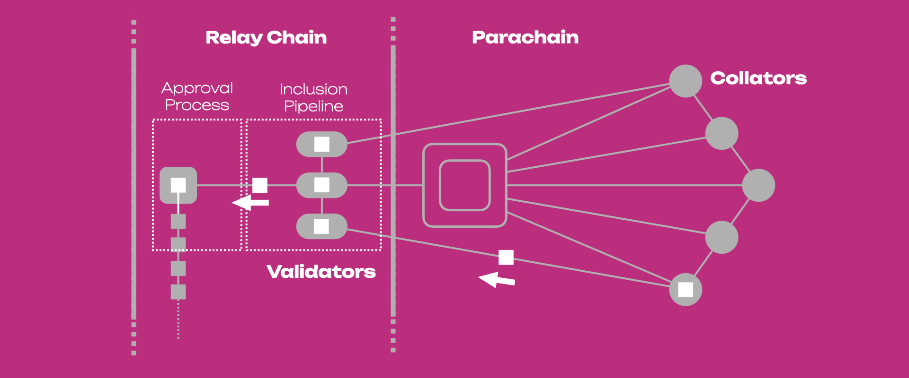
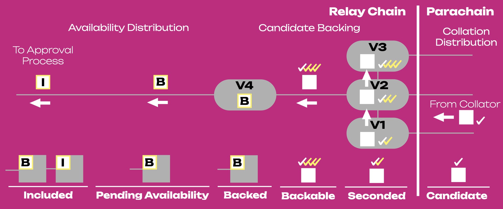
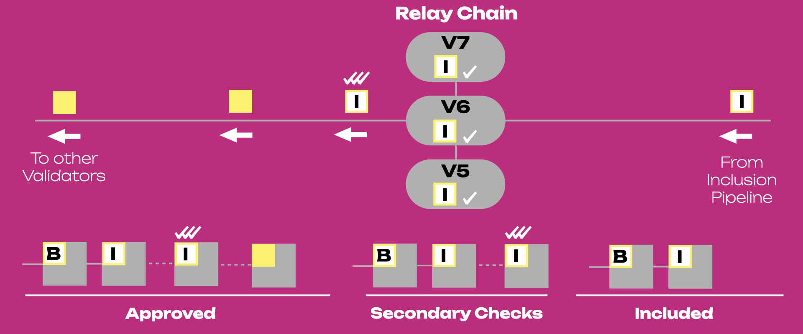
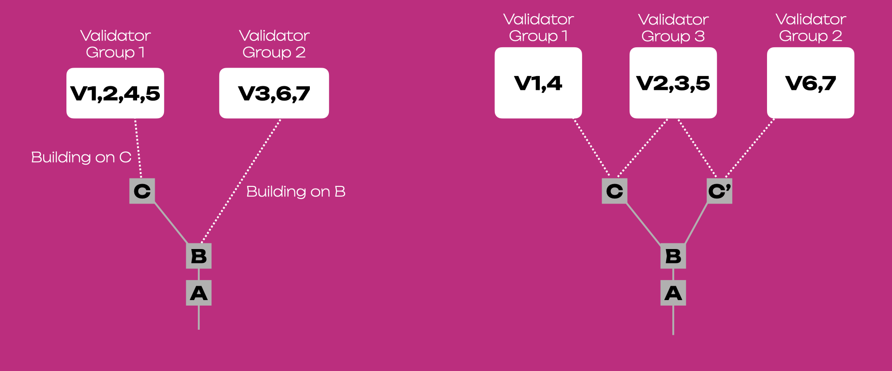

Parachains Protocol
Info
This page is a summary of the Protocol Overview chapter in The Polkadot Parachain Host Implementer's Guide and the Availability and Validity (AnV) chapter in The Polkadot Protocol Specification.
The Parachains' Protocol aims to carry a parachain's block from authoring to inclusion through a process that can be carried out repeatedly and in parallel for each parachain connected to the Relay Chain. The protocol allows the network to be efficiently sharded among parachains while maintaining strong security guarantees. The Availability and Validity (AnV) Protocol describes the Parachain Protocol from the perspective of availability and validity. on).
Main Actors¶
Validators¶
They are responsible for validating the proposed parachain's blocks by checking the Proof-of-Validity (PoV) of the blocks and ensuring the PoV remains available for a designated period. They have "skin in the game", meaning they have funds bonded on-chain that can be partially or fully confiscated by the network in case of misbehavior.
Collators¶
They create the PoV that validators know how to check. Creating PoV requires familiarity with transaction format and block authoring rules of a specific parachain, as well as having access to its full state.
Fishermen: Deprecated¶
Fishermen are not planned for formal implementation, despite previous proposals in the AnV protocol.
The idea behind Fishermen is that they are full nodes of parachains, like collators, but perform a different role in relation to the network. Instead of packaging the state transitions and producing the next parachain blocks as collators do, fishermen will watch this process and ensure no invalid state transitions are included.
To address the motivation behind the Fishermen design consideration, the current secondary backing checkers perform a similar role in relation to the network. From a security standpoint, security is based on having at least one honest validator either among parachain validators or secondary checker (more about this later on).
Protocols' Summary¶
Parachain Protocol¶
The parachain protocol is divided into two main phases:
- Inclusion Pipeline: Collators send parachain blocks (parablocks) with PoV to Validators. Validators verify if the parablocks follow the state transition rules of the parachain and sign statements that can have a positive or negative outcome. With enough positive statements, the block is backed and included in the relay chain, but is still pending approval.
- Approval Process: Validators perform additional checks that, if positive, allow the parablock to be approved.
The figure below shows a representation of a parachain with collators and validators. The figure also shows the journey of a parachain block (white square) through the Inclusion Pipeline and the Approval Process.

Availability and Validity (AnV) Protocol¶
The Availability and Validity (AnV) Protocol is a way of looking at the Parachain Protocol from another perspective, emphasizing the importance of a parablock being available and valid before being included in the finalized relay chain. It is divided into five different phases, three within the Inclusion Pipeline and two within the Approval Process:
- Inclusion Pipeline 1. Parachain phase 2. Relay chain submission phase 3. Availability and unavailability phase
- Approval Process 1. Assignments and secondary (validity) checks 2. Chain Selection
In the Inclusion Pipeline, a parablock is made available (or unavailable), while in the Approval Process a parablock is checked if it is valid or not.
Inclusion Pipeline¶
Overview¶
The inclusion pipeline is the path of a parachain block (or parablock) from its creation to its inclusion into the non-finalized relay chain (i.e. in a fork of the relay chain).

The figure above shows the path of a candidate block through the Inclusion pipeline. The block changes its status through this path as follows:
- Candidate: A block with its PoV is put forward by a collator to a para-validator (in this case V1). The candidate block is shown as a white square with one white tick mark at the side (PoV from the collator). Note the candidate is not valid yet and can still fail to be included in the Relay Chain.
- Seconded: The block is put forward by the para-validator V1 to other para-validators (in this case V2 and V3). The seconded block is shown as a white square with a white tick mark and a yellow tick mark on top of it. The yellow mark show the PoV from para-validator V1.
- Backable: The block validity is attested by a majority of the para-validators. The backable block is shown as white square with a white tick mark and three yellow tick marks on top of it. The yellow marks show the PoV from the para-validators, while the white mark the PoV from the collator.
- Backed: The block is backed and noted in a fork on the relay chain by a relay chain block author (in this case V4). The backed block is shown as a square with white background and yellow border enclosing a "B". The backed block can still fail to be included in the relay chain. Note that for simplicity here the backed parachain block is represented within the relay chain block, but in reality a relay chain block does not contain the parablocks themselves (more about this later).
- Pending availability: The block is backed but not considered available yet.
- Included: The block is backed and considered available (we have a parablock). Included parablocks are shown as square with white background and yellow border enclosing an "I".
Asynchronous Backing
Parablocks' backing and inclusion take 12 seconds to be recorded on the relay chain, i.e. backing happens in one relay chain block (6 seconds) and inclusion in another relay chain block (additional 6 seconds, see Figure above). With asynchronous backing, backing and inclusion can be recorded in just one relay chain block.
Parachain Phase¶
In the parachain phase, some validators are assigned to parachains by the Validator Assignment Routine (these validators are called para-validators). Para-validators establish a connection with collators, which propose candidate blocks together with Proof-of-Validity (PoV) to para-validators via the Collator Distribution Subsystem.
Para-validators participate in the Candidate Backing Subsystem. A para-validator needs to check if the candidate block follows the state transition rules of the parachain. Because states are stored within Merkle trees, a para-validator can verify state transitions without having access to the entire state, but it needs:
- The block candidate (list of state transitions)
- The values in the parachain's database that the block modifies
- The hashes of the unaffected points in the Merkle tree
This set of information is the proof-of-validity (PoV).
Once a para-validator has the PoV, it gossips this information to the other para-validators, who check the candidate block against the PoV. Candidates that gather more than half of signed validity statements are considered backable (i.e. they seem to represent a valid state transition), and their backing is the set of signed statements. The para-validators can then start to construct the candidate receipt (this is what goes into the relay chain block) and an erasure coding (this is what will make the parablock available, more on this later on) that will be sent to all validators in the network.
Polkadot guarantees valid state transitions, not valid states
Validators do not inspect every value in a parachain's state, only those that are modified. This insures that the modification is valid.
Previously, we said that backable blocks seem to represent valid state transitions because para-validators are a small subset of all validators. Thus, it is possible to have the majority of them dishonest. Later on, we will see that more validators with come in to help to make sure the parablock is fully valid.
Relay Chain Submission Phase¶
The receipt of the backable parablock is added to the relay chain transaction queue together with other receipts from other parachains. Receipts are gossiped around, and when a relay chain block author wins BABE slot leadership, it will select a candidate receipt to include in a block on a fork of the relay chain.
A block author can note up to 1 backable candidate for each parachain to be included in the Relay Chain block alongside its backing. Once included in a fork of the relay chain the candidate is considered backed in that fork. The candidate is considered to be in "pending availability" status, and it can only be considered a part of the parachain once proven available. Remember, at this stage validators of the relay chain already received the erasure coding information of that specific parablock.
Availability and Unavailability Phase¶
During the availability and unavailability phases, the validators will participate to Availability Distribution Subsystem to ensure availability of the candidate. They gossip the erasure coded pieces among the network. At least ⅓ + 1 validators must report that they possess their piece of the code word. Once this threshold of validators has been reached, the network can consider the candidate block available. The block is graduated to being a full parachain block, and its header will be included in that fork of the relay chain. The information about the candidate availability is noted in the subsequent relay chain blocks of that fork.
The availability check by the block author ensures that the relay chain will only include blocks for which the validators distributed their erasure-coded chunks, but it does not guarantee their validity. Because the number of para-validators on each parachain is so low, collusion is a reasonable concern. By separating block production (BABE) from finality (GRANDPA), validators can perform extra validity checks after a block is produced but before it is finalized.
Thus, once the parablock is considered available and part of the parachain, it is still "pending approval". The Inclusion Pipeline must conclude for a specific parachain before a new block can be accepted on that parachain. After inclusion, the Approval Process starts and it makes sure the block is valid, and it can run for many parachain blocks at once.
Data Availability - Erasure Codes of Parachain Blocks and PoVs
The erasure code chunks necessary for reconstructing parachain blocks and their respective Proofs-of-Validity (PoV) are stored on the relay chain validator’s hardware (disk) and made available to the relay chain network for up to 24 hours. It is important to note that this data is neither stored within the relay chain blocks nor in the chain state. Only the root of those chunks is embedded within the candidate receipt and is stored in the relay chain blocks.
Failure to Inclusion¶
The candidate can fail to be included in the parachain in any of the following ways:
- The collator cannot propagate the block to any of the assigned validators.
- The candidate is not backed by validators participating in the Candidate Backing subsystem.
- A relay chain block author does not select the candidate.
- The candidate's PoV is not considered available within a timeout, and the block is discarded from the relay chain.
Approval Process¶
Overview¶
Once the parablock is considered available and part of the parachain, it is still "pending approval". At this stage, the parablock is tentatively included in the parachain, although more confirmation is necessary. The validators assigned to the parachain (i.e. the parachain validators) are sampled from a validator set assumed to be ⅓ dishonest in the worst-case scenario. In this case, it is likely that the majority of the random para-validators sampled for a specific parachain are dishonest and can back a candidate wrongly. To address this, the Approval Process allows detecting misbehavior after the fact without allocating more para-validators, which would ultimately reduce the system's throughput. As a parablock can accept children blocks after being considered available, failure to pass the approval process will invalidate the parablock and its descendants (children blocks). Only the validators who backed the block in question will be slashed, not those who backed the descendants.
The approval pipeline can be divided into the following steps:
- Parablocks included by the Inclusion Pipeline are pending approval for a time window known as the secondary checking window.
- During the secondary checking window, validators (secondary checkers) randomly self-select based on a VRF lottery to perform secondary checks on each of the parablock.
- Secondary checkers acquire the parablock with PoV (erasure codings are necessary to reconstruct PoV) and re-run the validation function.
- Secondary checkers gossip about the results of their checks. Contradictory results lead to an escalation in which all validators must check the block. The validators on the losing side will be slashed.
- At the end of the process the parablock is either approved or rejected.
The figure below shows the path of a parachain block when it exits the Inclusion Pipeline, and enters the Approval Process. The parablock becomes accepted when it is backed, available and undisputed. The parablock is checked a second time by a subset of validators (V5, V6 and V7), and if there are no contradictory results the block is approved and gossiped to other relay chain validators. Note the parablock after secondary checks is shown as a square with a white background a yellow border enclosing an "I" (stands for included), and three white ticks (one for each secondary check). Approved para-blocks are shown as yellow squares.

Assignments & Secondary Checks¶
Having a bad parablock on a fork of the relay chain is not catastrophic as long as the block is not approved and finalized by the finality gadget GRANDPA. If the block is not finalized, the fork on the chain containing that block can be ignored in favor of another fork containing good blocks. Dealing with a bad parablock includes the following stages:
- Detection: the bad block must be detected by honest validators.
- Escalation: the honest validators must start a dispute.
- Consequences: the backer for that parablock is slashed.
The result of the dispute must be transplantable to all other forks so that malicious validators are slashed in all possible histories and so that honest validators will ignore any forks containing that parablock.
Parablocks vs. relay chain Blocks
It is important to understand that a relay chain block does not contain parablocks, but para-headers. Parachain blocks are within the parachain. Thus, it makes more sense to think of relay chain blocks as having been approved instead of parablocks that have been approved. A relay chain block containing information about approved parablocks can be considered approved as long as its parent relay chain block is also approved. Thus, the validity of a relay chain block depends on the validity of its ancestry.
Validators perform two main actions in the Approval Process:
- Assignments determine which validators perform approval checks on which candidates, ensuring each candidate receives enough random checkers. This stage tracks approval votes to identify when no-show approval checks take suspiciously long. It also tracks relay chain equivocations to determine when adversaries possibly gained foreknowledge about assignments and add more checks in those cases. Assignees determine their own assignments to check specific candidates using two or three assignment criteria, which are based on two possible stories about the relay chain block that included the candidate (i.e. declared the candidate available). Assignment notices are gossiped among nodes so that all validators know which validators should check which candidates, and if any candidate requires more checkers.
- Approval checks perform the checks by obtaining the candidate, verifying its validity, sending out the approval vote, or initiating a dispute. Approval checks have a no-show timeout window (i.e. longer than one relay chain slot) to succeed in reconstructing the candidate block, redo its erasure coding to check the candidate receipt, and recheck the candidate block itself. A validator becomes tagged as a no-show if it does not approve or dispute within the no-show timeout window. Because validators can be overloaded with assignments, they can intentionally delay sending their assignment notice to avoid creating no-shows (see more in Assignment postponement).
These two steps first run as off-chain consensus protocols using messages gossiped among all validators, and then as on-chain record of those protocols' progress. The on-chain protocol is needed to provide rewards for the off-chain protocol. The on-chain verification has two phases: a) assignments notices and approval votes are recorded in a relay chain block, and b) in another relay chain block notes are fed into the approval code.
The gossiped messages are of two types, assignment notices, and approval votes, and are signed with approval keys. Such keys are part of the session keys used by validators. Briefly, approval keys are:
- Approval assignment keys that are sr25519 keys used only for assignment criteria VRF.
- Approval vote keys that are ed25519 and would only sign off on a candidate parablock validity.
Info
For detailed information about the approval process, see dedicated section in The Polkadot Parachain Host Implementers' Guide.
Accepting a parablock is the result of having passed through the detection stage without dispute, or having passed through and escalation/dispute stage with a positive outcome.
Chain Selection¶
After enough secondary checks have been performed on all candidate receipts within a block, validators can vote for that block (and all previous blocks) in GRANDPA. Once the block has more than ⅔ of positive votes, the block is finalized on chain.
Chain selection is used to select blocks to build on and finalize. These processes need to consistent among nodes and resilient to a maximum proportion of malicious nodes. The parachain host uses a block authoring system and a finality gadget. The chain selection strategy involves a leaf-selection rule and a set of finality constraints.
Info
For detailed information about chain selection, see dedicated section in The Polkadot Parachain Host Implementers' Guide.
Candidate Receipts¶
PoV are typically between 1 MB and 10 MB in size and are not included in the relay chain blocks. For Polkadot to scale to hundreds of parachains, PoV need to be represented by something smaller on the relay chain: candidate receipts. A para-validator constructs a candidate receipt for a parachain block by signing:
- The parachain ID.
- The collator's ID and signature.
- A hash of the parent block's candidate receipt.
- A Merkle root of the block's erasure-coded pieces.
- A Merkle root of any outgoing messages.
- A hash of the block.
- The state root of the parachain before block execution.
- The state root of the parachain after block execution.
This information is of constant size, while the actual PoV block of the parachain can be variable length. It is enough information for anyone that obtains the full PoV block to verify the state transition contained inside of it.
Erasure Codes¶
Before sending the candidate receipt to the relay chain transaction queue, the para-validator who constructs the receipt must also construct an erasure coding of the parachain block.
An erasure coding takes a message (in this case, the parachain block and PoV) and creates a set of smaller messages such that you can reconstruct the original message by obtaining a fraction of the smaller messages. In the case of Polkadot, the total number of smaller messages is equal to the total number of validators and the fraction is ⅓.
The para-validator creates the erasure coding chunks, puts them into their Merkle tree, and sends out each chunk (together with the candidate receipt) to a corresponding validator on the Relay Chain. Validators who receive the receipts with an erasure coding chunk will include the receipt in the relay chain queue, where an author can include it in a block.
The type of erasure codes used by Polkadot's availability scheme are Reed-Solomon codes, which already enjoy a battle-tested application in technology outside the blockchain industry. One example is found in the compact disk industry. CDs use Reed-Solomon codes to correct any missing data due to inconsistencies on the disk face such as dust particles or scratches.
In Polkadot, the erasure codes are used to keep parachain state available to the system without requiring all validators to keep tabs on all the parachains. Instead, validators share smaller pieces of the data and can later reconstruct the entire data under the assumption that ⅓+1 of the validators can provide their pieces of the data.
!!!note The ⅓+1 threshold of validators that must be responsive to construct the full parachain state data corresponds to Polkadot's security assumption about Byzantine nodes.
Disputes¶
All parachain blocks that are in the finalized relay chain should be valid. This does not apply to backed blocks that are not included. To ensure nothing invalid ends up in the finalized relay chain, there are approval checks (described above) and disputes. The latter ensures that each attempt to include something invalid is caught and the offending validators are punished.
False positives can happen; those actors responsible for it will be slashed. To detect false positives, PoV information must be available after the block has been included to the relay chain via the availability scheme.
Disputes are independent from a particular fork, while backing and approval operate on particular forks. The approval voting stops if an alternative fork (which might not contain the currently-approved candidate) is finalized. The sole purpose of the approval process is to make sure invalid blocks are not finalized. However, even though the danger is past and the offending validators did not manage to get the invalid block approved, those validators need to get slashed for the attempt.
A dispute stems from a disagreement between two or more validators. For this to happen, a bad actor needs to distribute an invalid block to honest validators. Scenarios leading to a dispute can be one of the followings (ordered from most to least important):
- A parablock included on a branch of the relay chain is bad
- A parablock backed on a branch of the relay chain is bad
- A parablock seconded, but not backed on any branch of the relay chain, is bad
Checking a parachain block requires three pieces of data: the parachain validator code, the availability of data, and the candidate receipt. The validator code is available on-chain and published ahead of time. Thus, a dispute process begins with the availability to ensure the availability of the data. Such a process will conclude quickly if the data is already available, otherwise, the initiator of the dispute must make it available.
Disputes have both off- and on-chain components. Slashing is handled on-chain, so votes by validators on either side of the dispute must be placed on-chain. Moreover, a dispute on one branch of the chain must be transposed to all active branches so that misbehavior can be punished in all possible histories. There is, thus, a distinction between local (the one we are looking at) and remote disputes relative to a particular branch of the relay chain.
Disputes can be divided into three different phases:
- Dispute initiation: Disputes are initiated by any validator who finds their opinion on the validity of a parablock in opposition to another issued statement. The initiation begins off-chain by only nodes perceiving that a parablock is bad. The validator can be one of the para-validators (i.e. one of the backers) or one of the approval checkers. Note that if the dispute occurs during the backing phase, the initiator must make the data available while if the dispute occurs during the approval process the data is already available.
- Dispute participation: Once becoming aware of the dispute, all validators must participate.
- Dispute conclusion: Disputes conclude after a ⅔ supermajority is reached on either side. Disputes may also conclude after a timeout. This will only happen if the majority of validators are unable to vote for some reason.
The on-chain component of the dispute can be initiated by providing any two conflicting votes and it also waits for a ⅔ supermajority on either side. The component also tracks which parablocks have already been disputed so that the same parablock can be disputed only once on any branch of the relay chain. Inclusion is halted for the parachain until the dispute resolves.
Info
For detailed information about disputes, see dedicated section in The Polkadot Parachain Host Implementers' Guide. In the Guide, there are also more details about disputes' flows.
Network Asynchrony¶
We have mentioned how a relay chain block author must select the candidate and note it on the Relay Chain (we say the block is backed). The relay chain block author is selected by BABE, which is a forkful algorithm. This means that different block authors are chosen at the same time, and they may not work on the same block parent (i.e. the representations in the previous figures are simplistic). Also, the sets of validators and parachains are not fixed, and the validators' assignments to parachains is also flexible.
We say that the network is asynchronous since there will be validators who have received a block and other validators who did not. Thus, the network is variable, and it exists in multiple states. In the figure below (left), Group 1 received block C while Group 2 did not due to network asynchrony. Validators in Group 2 can build another block on top of B, called C'. Assume that afterward, some validators become aware of both C and C' while others remain aware of one of them (right). Validators in Group 3 must be aware of the network state in each head (C and C’), and they may contribute to some or full extent on both. It is possible that due to network asynchrony, two forks may grow in parallel for some time, but eventually, one fork will be chosen by the finality gadget. In the absence of an adversarial network, it is unlikely that two forks will coexist for some time as there will be validators aware of both chain heads.

Further Resources¶
- Path of a Parachain Block - Article by Parity analyst Joe Petrowski expounds on the validity checks that a parachain block must pass in order to progress the parachain.
- Availability and Validity - Paper by the W3F Research Team that specifies the availability and validity protocol in detail.